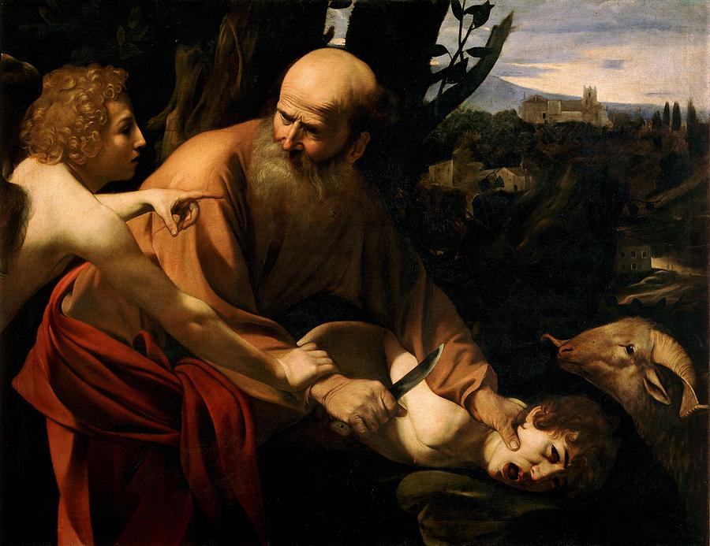

Poems
A Pantoum for Ishmael

Abraham did as he was told, finding God in what he was not. Your only son on an altar, knife to his throat, finding God in what doesn't look much like love. On an altar, knife to his throat, your son will look at you differently. Doesn't look much like love in the desert. Isaac, like your son, will look at you differently when God saves him. Remember that? In the desert, Isaac, like Abraham, did as he was told. When God saves him, remember that he was not your only son.
Johanna is a Pushcart-nominated poet from Charlottesville, VA whose writing generally features lesbianism, God, disability, and/or various troubled pasts. Find more at johannapoet.com or on Instagram @johannahallwrites.